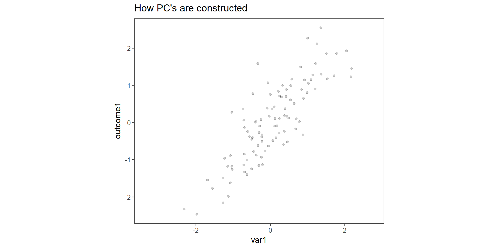
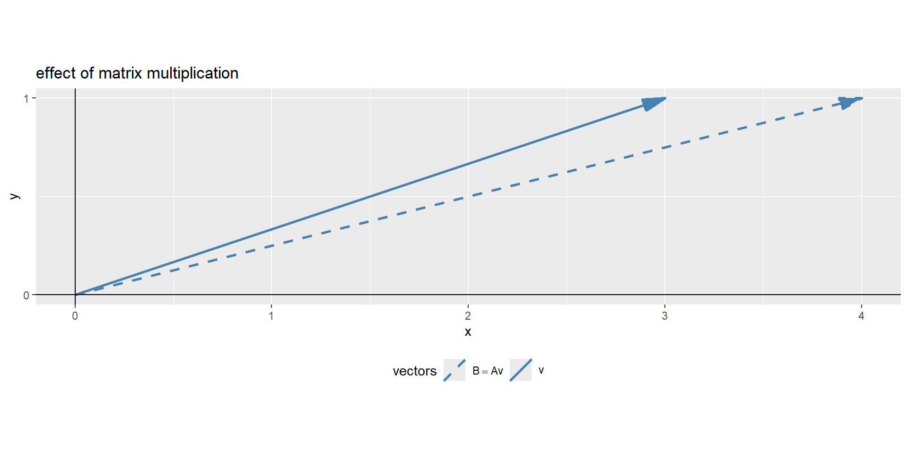

var1 outcome1
var1 1.0000000 0.8334811
outcome1 0.8334811 1.0000000Principal Component Analysis
Principal Component Analysis (PCA)
Practical Use
dimensionality reduction method
transforming a large set of variables into a smaller one that still contains most of the information in the large set.
trade a little accuracy for simplicity
reduce the number of variables of a data set, while preserving as much information as possible.
The whole game
- Standardize the range of continuous initial variables
- Compute the covariance matrix to identify correlations
- Compute the eigenvectors and eigenvalues of the covariance matrix to identify the principal components
- Create a feature vector to decide which principal components to keep
- Recast the data along the principal components axes
- Interpreting the results
Step 1: Standardization
\[\begin{align} z = \frac{x_i - \bar{x}}{\sigma} \end{align}\]
Step 2: Covariance matrix computation
- The covariance matrix is a \(p \times p\) symmetric matrix (p: number of dimensions) that has as entries the covariances associated with all possible pairs of the initial variables.
- For example, for a 3-dimensional data set with 3 variables \(x\), \(y\), and \(z\), the covariance matrix is a \(3\times 3\) data matrix \(\eqref{covmat}\).
\[\begin{align} \begin{bmatrix} Cov(x,x) & Cov(x,y) & Cov(x,z) \\ Cov(y,x) & Cov(y,y) & Cov(y,z) \\ Cov(z,x) & Cov(z,y) & Cov(z,z) \end{bmatrix} \label{covmat} \end{align}\]
- positive: the two variables increase or decrease together (correlated)
- negative: one of variables increases while the other decreases (inversly correlated)
The difference between the covariance and correlation matrix is, that the covariance matrix is not standardized (values can range between \(-\infty \ldots +\infty\)), while the correlation matrix is standardized (values can range between \(-1 \ldots +1\)).
Step 3: Eigencomputation of covariance to identify the principal components (PC)
- linear combinations or mixtures of the original variables.
- new variables are uncorrelated and most of the information in the original variables is retained
- \(10\)-dimensional data gives you \(10\) principal components, with maximum possible information in the first component (\(PC_1\)), then the maximum of the remaining information in \(PC_2\) and so on.
- scree-plot, see Figure 1.
Figure 1: An example for a scree plot in PCA
Note
An important thing to realize here is that the principal components are less interpretable and do not have any real meaning since they are constructed as linear combinations of the initial variables.
Geometrically speaking, principal components represent the directions of the data that explain a maximal amount of variance, that is to say, the lines that capture most information of the data.
The relationship between variance and information here, is that, the larger the variance carried by a line, the larger the dispersion of the data points along it, and the larger the dispersion along a line, the more information it has.
How \(PC_n\) are constructed
Figure 2: Construction of \(PC_{1\ldots 2}\) in two dimensions.
Eigendecomposition
- the eigenvectors of the covariance matrix are the directions of the axes in which the highest variation in the dataset exists.
- those directions are called Principal Components.
- the eigenvalues correspond to the amount of variance carried by the \(PC\).
- By ranking the eigenvectors according to the eigenvalues (highest to lowest) you get the \(PC\) in order of significance.
- this process is called eigendecomposition.
\[\begin{align} cov = \begin{bmatrix} 1 & 0.8334811 \\ 0.8334811 & 1 \end{bmatrix} \label{excovmat} \end{align}\]
The eigenvectors and eigenvalues of \(\eqref{excovmat}\) are then calculated using eigendecomposition (seee \(\eqref{exl1}\) and \(\eqref{exl2}\)).
\[\begin{align} \vec{v_1} &= \begin{bmatrix} 0.7071068 \\ 0.7071068 \end{bmatrix} &&\lambda_1 = 1.8334811 \label{exl1} \\ \vec{v_2} &= \begin{bmatrix} -0.7071068 \\ 0.7071068 \end{bmatrix} &&\lambda_2 = 0.1665189 \label{exl2} \end{align}\]
The eigenvalues ranked give us \(\lambda_1>\lambda_2\) which means that \(\vec{v_1}\) corresponds to \(PC_1\) and \(\vec{v_2}\) corresponds to \(PC_2\). \(\lambda_1\) and \(\lambda_2\) are then normalized to \(\sum\lambda_i\) in order to estimate the percentage of explained variance.
explained_variance <- round(eigen_mat$values/sum(eigen_mat$values)*100, digits = 1)
explained_variance[1] 91.7 8.3In this case \(PC_1\) explains \(91.7\%\) and \(PC_2\) the remaining \(8.3\%\).
Basics: Matrix multiplication
Given is matrix \(A = (a_{ij})\) with \(m \times n\) dimensions (columns \(\times\) rows) and vector \(\vec{v}=(v_{k})\) with \(k\) columns that result in matrix \(B = (b_{ik})\) with \(1 \times 3\) dimensions, a vector (\(\vec{B}\)).
The number of matrix columns (\(m\)) must be equal to the number of vector rows (\(k\)).
The components of \(B\) are computed according to \(b_i = \sum{a_{ij}v_{k}} \text{ with }i = 1,2,\ldots m\).
\[\begin{align} A &= \begin{bmatrix} 1 & 1\\ 0 & 1 \end{bmatrix} \vec{v} = \begin{bmatrix} 3\\ 1 \end{bmatrix} \nonumber \\ \vec{B} &= A\times \vec{v} = \begin{bmatrix} 1*3 + 1*1\\ 0*3 + 1*1 \end{bmatrix} = \begin{bmatrix} 4\\ 1 \end{bmatrix} \end{align}\]
code
The special operatior %*% must be used to facilitate matrix multiplication in R.
visual representation
Figure 3: The visual representation of a matrix multiplication
In Figure 3 the effect matrix \(A\) had on vector \(\vec{v}\), it changed its direction. Eigendecomposition uses this math to find a matrix, which does not change the direction of the vector, only its magnitude. The effect of the matrix on the vector is therefore the same, as if the vector is multiplied with a scalar values.
Eigenvalue computation
This results in the fundamental eigenvalue equation \(\eqref{eigval}\) and the rearranged \(\eqref{eigval2}\).
\[\begin{align} Av = \lambda v \label{eigval} \\ (A-\lambda I)v = 0 \label{eigval2} \end{align}\]
This is the core idea of eigendecomposition. To find a non-trivial solution to \(\eqref{eigval2}\), the scalars (\(\lambda\)) that shift the matrix (\(A\)) just enough to make sure, a matrix-vector multiplication equals zero, sending the vector \(\vec{v}\) in its null-space.
In a geometrical sense, we are looking for a matrix that squishes space into a lower dimension with an area or volume of zero. This can be achieved when the matrix determinant equals zero \(\eqref{det}\).
\[\begin{align} \det(A-\lambda I) = 0 \label{det} \end{align}\]
determinant of a matrix
A determinante of a matrix is a scalar value as a function of a square matrix. This scalar is a measure by how much a geometry is transformed. If \(\det(A)=0\) two rows and columns are equal and the linear mapping of the matrix is found.
\[\begin{align} A = \begin{bmatrix} a=1 & c=1\\ b=0 & d=1 \end{bmatrix} = ad-bc = 1*1-0*1 = 1 \label{calcdet} \end{align}\]
Figure 4: The visual representation of the \(\det A\)
In Figure 4 the determinant \(\det A\) is visually depicted. With \(\eqref{calcdet}\) the determinante is calculated, as well as with the function determinant().
Eigendecomposition to find eigenvalues
Before the eigenvectors of a matrix can be found, first the eigenvalues must be determined. A \(M\times M\) matrix has \(M\) eigenvalues and \(M\) eigenvectors. Each eigenvalue has a related eigenvector. Once the eigenvalues are unlocked, the step to finding the eigenvectors is simple enough.
Example
Imagine \(2\times 2\) matrix of which the eigenvalues shall be computed. Using \(\eqref{det}\) a characteristic polynomial can be computed and solved for the eigenvalues.
\[\begin{align} \begin{vmatrix} \begin{bmatrix} 3 & 1 \\ 0 & 2\end{bmatrix} - \lambda \begin{bmatrix} 1&0\\ 0&1 \end{bmatrix} \end{vmatrix} &= 0 \\ \begin{vmatrix} 3-\lambda & 1 \\ 0 & 2-\lambda \end{vmatrix} &= 0 \\ (3-\lambda)(2-\lambda) &= 0\\ \lambda_1 = 3, \lambda_2 = 2 \label{eigensol} \end{align}\]
The solution in \(\eqref{eigensol}\) shows that the eigenvalues of the matrix have the magnitude \(\lambda_1 = 3\) and \(\lambda_2 = 2\). Now we proceed with eigenvectors.
Note
Finding the eigenvalues gets more involved and computationally expensive the larger the matrices become using the Abel-Ruffini theorem. Therefore, a whole family of iterative algorithms exists to compute the eigenvalues.
Eigendecomposition to find eigenvectors
Eigenvectors describe the directions of a matrix that are invariant to rotations. They will not change direction. Using the eigenvalues from before, the eigenvectors can be revealed \(\eqref{eigenvectors}\).
\[\begin{align} (A-\lambda_i I)v_i=0\label{eigenvectors} \end{align}\]
Based on the fundamental eigenvalue equation, the ith-eigenvalue is plucked in \(\eqref{eigval2}\) and the ith eigenvector is retrieved from the null space of the matrix.
Starting with \(\lambda_1 = 3\) from the example before:
\[\begin{align} \begin{pmatrix}\begin{bmatrix} 3&1\\0&2 \end{bmatrix}-3\begin{bmatrix} 1&0\\0&1 \end{bmatrix}\end{pmatrix}v_i &= 0, \lambda_i = 3\\ \begin{bmatrix} 3-3 & 1 \\ 0 & 2-3 \end{bmatrix}\begin{bmatrix}x\\y\end{bmatrix} &= \begin{bmatrix}0\\0\end{bmatrix} \\ \begin{bmatrix} 0 & 1 \\ 0 & -1 \end{bmatrix}\begin{bmatrix}1\\0\end{bmatrix} &= \begin{bmatrix}0\\0\end{bmatrix}, x = 1, y = 0 \end{align}\]
Note
The solution is not unique. That is why eigenvectors are usually scaled to accord to unit norm (absolute value = 1).
The second solution for \(\lambda_2 = 2\) is shown below.
\[\begin{align} \begin{bmatrix} 1 & 1 \\ 0 & 0 \end{bmatrix}\begin{bmatrix}1\\-1\end{bmatrix} &= \begin{bmatrix}0\\0\end{bmatrix}, x = 1, y = -1 \end{align}\]
This eigenvector does not have length of one. It is scaled by multiplying with \(1/\sqrt{2}\).
Example eigendecomposition and matrix reconstruction
Above was shown, what eigendecomposition is, below there is a final example. First a \(3\times 3\) matrix is constructed \(\eqref{A}\) and the eigenvalues and eigenvectors are retrieved.
\[\begin{align} A = \begin{bmatrix} 10 & 21 & 36 \\ 47 & 51 & 64 \\ 72 & 87 & 91 \end{bmatrix} \label{A} \end{align}\]
The resulting eigenvalues of \(A\) are \(\lambda_1 = 170.5327005\), \(\lambda_2 = -12.6477368\) and \(\lambda_3 = -5.8849637\). The eigenvectors are shown in \(\eqref{eigenA}\).
\[\begin{align} \vec{v_1} = \begin{bmatrix} -0.2509516 \\ -0.5317542 \\ -0.8088639 \end{bmatrix} \; \vec{v_2} = \begin{bmatrix} -0.8785074 \\ 0.2249269 \\ 0.421465 \end{bmatrix} \; \vec{v_3} = \begin{bmatrix} 0.7189406 \\ -0.6898336 \\ 0.0851711 \end{bmatrix} \label{eigenA} \end{align}\]
A graphical depiction of the eigenvectors is shown in Figure 5.
The original matrix can be reconstructed from the eigendecomposition. It is achieved by calculating the product of the eigenvectors, the eigenvalues and the inverse of the eigenvectors.
\[\begin{align} A = V \Lambda V^{-1} \label{matrecon} \end{align}\]
For this the eigenvalues must first be diagonalized so a unit matrix can be formed \(\eqref{Lambda}\).
\[\begin{align} \Lambda = \begin{bmatrix} \lambda_1 & 0 & 0 \\ 0 & \lambda_2 & 0 \\ 0 & 0 & \lambda_3 \end{bmatrix} \label{Lambda} \end{align}\]
Then the inverse of the eigenvectors is computed such as the identity matrix \(I\) can be formed
\[\begin{align} V \cdot V^{-1} = I = \begin{bmatrix} 1 & 0 & 0 \\ 0 & 1 & 0 \\ 0 & 0 & 1 \end{bmatrix} \end{align}\]
In the end \(A\) is reconstructed using \(\eqref{matrecon}\).
[,1] [,2] [,3]
[1,] 10 21 36
[2,] 47 51 64
[3,] 72 87 91Which can be proven using the all.equal() function as shown below.
Step 4: Feature vector
The feature vector is simply a matrix that has as columns the eigenvectors of the components that we decide to keep. This makes it the first step towards dimensionality reduction, because if we choose to keep only \(p\) eigenvectors (components) out of \(n\), the final data set will have only p dimensions. Coming back to the toy example, \(91.7\%\) are explained by \(\vec{v_1}\), why we will only keep \(PC_1\). Therefore the dimensions are reduced from \(2\) to \(1\).
\[\begin{align} \vec{v_1} &= \begin{bmatrix} 0.7071068 \\ 0.7071068 \end{bmatrix} &&\lambda_1 = 1.8334811 \nonumber \end{align}\]
This shall showcase that the dimensionality reduction is up to the user, who has to decide how much variance (information) shall be retained in the data.
Note
A rule of thumb is that about \(90\%\) of the variance shall be kept in the transformed data. Therefore, as many \(PC\) are kept until an explained variance of \(90\%\) is reached.
Step 5: Recast the data along the principal component axes
Apart from standardization no changes to the original data has been made up to this point. In this last step, the aim is to form the feature vector from the eigenvectors of the covariance matrix in order to reorient the data from the original axes to the ones represented by the principal components. Not surprisingly, this is why PCA is called Principal Component Analysis. This is done by multiplying the transpose of the original data set by the transpose of the feature vector (\(\vec{v_1}\) for the toy data).
\[\begin{align} FinalData = \vec{v_1}^T \times StandardizedOriginalDataSet^T \end{align}\]
In order to check the validity of our approach, the manual calculations are compare to the output of the standard R function princomp() from the base package stats.
Step 6: Interpreting the results
It is great to reduce the dimensionality of the data, but what does it all mean? This can be answered by exploring how they relate to each column using the loadings of each principal component. With this toy data, we use \(PC_1\) in order to explain the princomp() output.
The reconstructed linear combination for \(PC_1\) is then shown in \(\eqref{eqpc1}\).
\[\begin{align} PC_1 = 0.7071068 * var1 + 0.7071068 * outcome1 \label{eqpc1} \end{align}\]
The toy example consists of linear dependent data (we constructed it that way). It is important to note that var1 and outcome1 do not have the specific “roles” any more, the output is now a principal component, to which both variable contribute the same level of variance. This is indeed the case when qualitatively inspecting Figure 2.
Connection to linear regression
This bears the question: How does PCA connect to classical linear regression? For this, we build a classical linear regression model from the toy data \(\eqref{linreg}\).
\[\begin{align} y_i = \beta_0 + \beta_1x_1 + \epsilon \label{linreg}\\ \end{align}\]
Call:
lm(formula = outcome1 ~ var1, data = as.data.frame((sim_data)))
Residuals:
Min 1Q Median 3Q Max
-1.16972 -0.42945 -0.04778 0.35984 1.94499
Coefficients:
Estimate Std. Error t value Pr(>|t|)
(Intercept) -0.03420 0.05973 -0.573 0.568
var1 0.99012 0.06631 14.933 <2e-16 ***
---
Signif. codes: 0 '***' 0.001 '**' 0.01 '*' 0.05 '.' 0.1 ' ' 1
Residual standard error: 0.5952 on 98 degrees of freedom
Multiple R-squared: 0.6947, Adjusted R-squared: 0.6916
F-statistic: 223 on 1 and 98 DF, p-value: < 2.2e-16Characteristic |
Beta |
95% CI 1 |
p-value |
|---|---|---|---|
| var1 | 0.99 | 0.86, 1.1 | <0.001 |
| Adjusted R² | 0.692 | ||
| 1
CI = Confidence Interval |
|||
From the parameters we see that we
- Have a significant model
- With a significant slope, the intercept however is not significant
- With a \(r^2_{adjusted} = 0.6915753\)
So the \(r^2\) and \(r^2_{adjusted}\) are both in the range of the loading for the first \(PC\) (\(0.7071068\)). This actually makes sense when we remeber that PCA is based on the covariance matrix, which is basically the unscaled correlation matrix, which in turn again connects to the \(r^2\) and \(r^2_{adjusted}\) when we think of \(r^2\) being the percentage of explained variance for a linear regression model. Isn’t it beautiful?
A more realistic example
We have done the complete game for a classical PCA on a toy example. We now understand how the bits and pieces connect to the actual math and that there is nothing intimidating about the method at all. But now we want to use it! Lets imaging a manufacturing process and we want to monitor it. Production processes get multivariate really quick, lets see the data-
- feed velocity
- solder temperature
- nitrogen ppm
- squeegee pressure
- solder height
- solder volume
- x position
- y position
- component angle
- room temperature
- room humidity
more examples
Kudos to Prof. John Rasmussen, Prof. Michael Skipper Andersen
References
James, Gareth, Daniela Witten, Trevor Hastie, and Robert Tibshirani. 2021. An Introduction to Statistical Learning. Springer.

Copyright Prof. Dr. Tim Weber, 2024